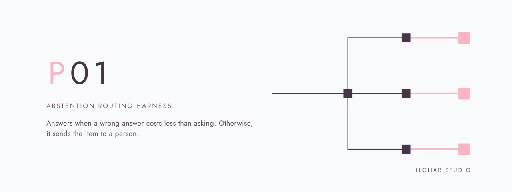

ilghar.studio | abstention
Abstention & Routing Harness
Routing harness
Answerrouteor abstain
In progress
Live function
Proof
Adversarial suite
34 of 34 probes now behave.
Held-out probes
5 of 12 still answer when they should decline.
Advisory only
The harness never moves a document.
Project material

How it works
- Independent scope label and validation gates before any proposal is read.
- Abstain on conflict, malformation, or exhausted budget — with a plain-language reason.
- Metrics always carry denominators; held-back items become a prioritised review queue.